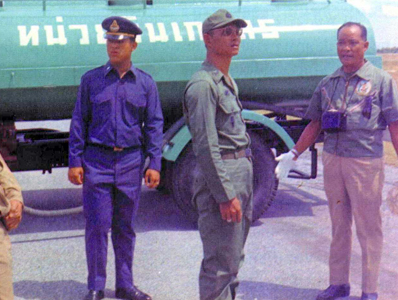
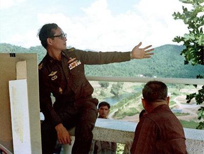

พระบาทสมเด็จพระเจ้าอยู่หัวภูมิพลอดุลยเดช รัชกาลที่ 9 ทรงมีพระราชดำริส่วนพระองค์ในเรื่องการจัดทำฝนหลวง เพื่อบรรเทาปัญหาขาดแคลนน้ำในการเกษตร โดยมีการค้นคว้าทดลองปฏิบัติการฝนหลวงขึ้น ซึ่งจะใช้สารเคมีโปรยในท้องฟ้า จนกระทั่งไอน้ำอิ่มตัวและกลั่นตัวออกมากลายเป็นเม็ดฝน
โครงการพระราชดำริฝนหลวง เกิดขึ้นจากพระราชดำริส่วนพระองค์ ในพระบาทสมเด็จพระบรมชนกาธิเบศร มหาภูมิพลอดุลยเดชมหาราช บรมนาถบพิตร เมื่อคราวเสด็จพระราชดำเนินเยี่ยมราษฎรในพื้นที่แห้งแล้งทุรกันดาร ๑๕ จังหวัด ในภาคตะวันออกเฉียงเหนือ ระหว่างวันที่ ๒-๒๐ พฤศจิกายน พ.ศ.๒๔๙๘ ในวันจันทร์ที่ ๑๔ พฤศจิกายน พ.ศ.๒๔๙๘ เสด็จพระราชดำเนินโดยรถยนต์เดลาเฮย์ ซีดานสีเขียว จากจังหวัดนครพนมไปจังหวัดกาฬสินธุ์ ผ่านจังหวัดสกลนครและ เทือกเขาภูพาน ได้ทรงรับทราบถึงความเดือดร้อน ทุกข์ยากของราษฎร และเกษตรกรที่ขาดแคลนน้ำอุปโภคบริโภค และการเกษตร เมื่อเสด็จพระราชดำเนินกลับถึงกรุงเทพมหานคร ทรงพระกรุณาโปรดเกล้าฯ ให้หม่อมราชวงศ์เทพฤทธิ์ เทวกุล วิศวกรและนักประดิษฐ์ควายเหล็กที่มีชื่อเสียงเข้าเฝ้าฯ แล้วพระราชทานแนวความคิดนั้นแก่หม่อมราชวงศ์เทพฤทธิ์ เทวกุล
ทฤษฎีต้นกำเนิด "หลักการแรก คือให้โปรยสารดูดซับความชื้น (เกลือทะเล) จากเครื่องบิน เพื่อดูดซับความชื้นในอากาศ แล้วใช้สารเย็นจัด (น้ำแข็งแห้ง) เพื่อให้ความชื้นกลั่นตัวและรวมตัวเป็นเมฆ" ความคิดเริ่มแรกในการดัดแปรสภาพอากาศ เพื่อให้เกิดฝน
โดยกระทรวงเกษตรและสหกรณ์แต่งตั้งให้ หม่อมราชวงศ์เทพฤทธิ์ เทวกุล เป็นผู้อำนวยการโครงการและหัวหน้าคณะปฏิบัติการทดลองเป็นคนแรก และเลือกพื้นที่วนอุทยานเขาใหญ่เป็นพื้นที่ทดลองเป็นแห่งแรกโดยทดลองหยอดก้อนน้ำแข็งแห้ง (dry ice หรือ solid carbondioxide) ขนาดไม่เกิน ๑ ลูกบาศก์นิ้ว เข้าไปในยอดเมฆสูงไม่เกิน 10,000 ฟุต ที่ลอยกระจัดกระจายอยู่เหนือพื้นที่ทดลองในขณะนั้น ทำให้กลุ่มเมฆทดลองเหล่านั้นมีการเปลี่ยนแปลงทางฟิสิกส์ของเมฆอย่างเห็นได้ชัดเจนเกิดการกลั่นรวมตัวกันหนาแน่น และก่อยอดสูงขึ้นเป็นเมฆฝนขนาดใหญ่ในเวลาอันรวดเร็วแล้วเคลื่อนตัวตามทิศทางลมพ้นไปจากสายตาไม่สามารถสังเกตได้เนื่องจากยอดเขาบัง แต่จากการติดตามผลโดยการสำรวจทางภาคพื้นดิน และได้รับรายงานยืนยันด้วยวาจาจากราษฎรว่าเกิดฝนตกลงสู่พื้นที่ทดลองวนอุทยานเขาใหญ่ในที่สุด นับเป็นนิมิตหมายบ่งชี้ให้เห็นว่าการบังคับเมฆให้เกิดฝนเป็นสิ่งที่เป็นไปได้


กรมฝนหลวงและการบินเกษตร ภายในมหาวิทยาลัยเกษตรศาสตร์